vol.26 R TRUNK with [Sean Leon]
Ye와 다니엘 시저의 앨범 크레딧 이면에서 독보적인 사운드를 깎아낸 캐나다의 인디펜던트 아티스트, 션 레온.
지난 4월 자신의 미공개 앨범 'God's Algorithm’ 청음회를 위해 낯선 서울을 방문하며 음악이라는 매개체로 새로운 도전을 시도하기도 했습니다.
안락함 대신 창의성을 좇아 기꺼이 방황을 자처하는 션 레온에게 스스로의 길을 찾아 떠나는 여정에 대해 물었습니다.
넓은 세상을 여행할 때 필요한 쌩쌩한 것들을 모아서 팝니다. 도심을 여행할 때 필요한 가방, 비행기에 싣고 떠날 트렁크, 산과 바다를 자유로이 돌아다닐 때 입을 옷과 신발, 여행할 때 입고, 걷고, 앉고, 가지고 다닐 물건들을 파는 가게입니다.
scroll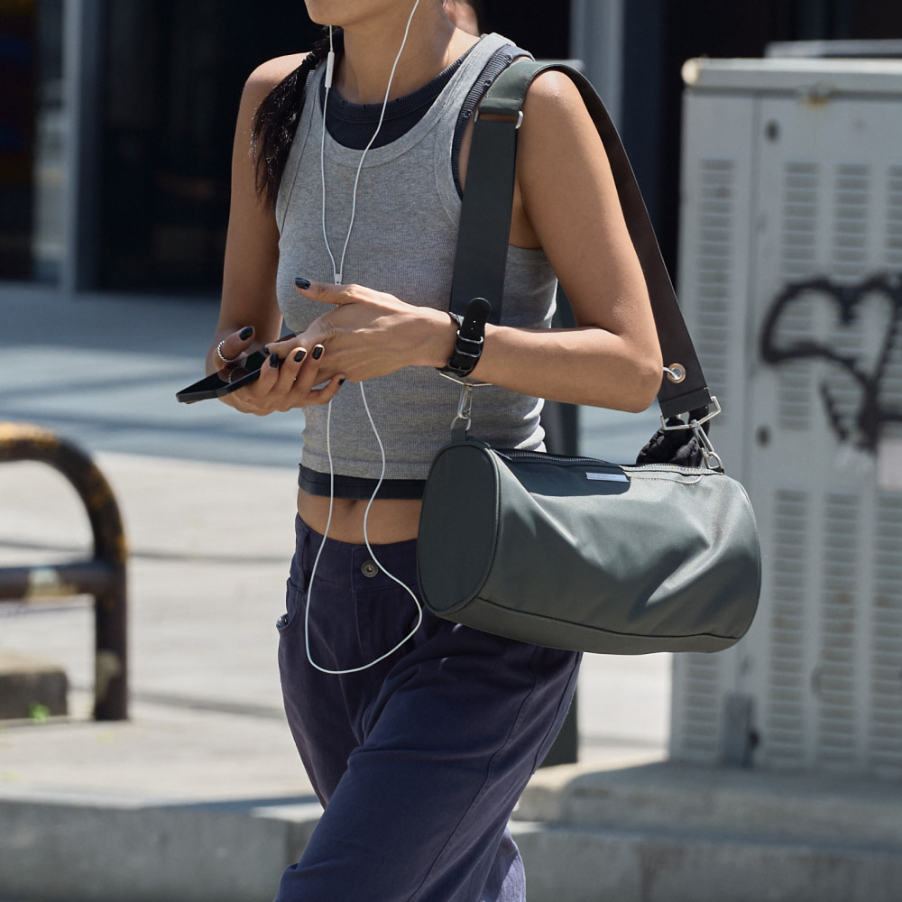
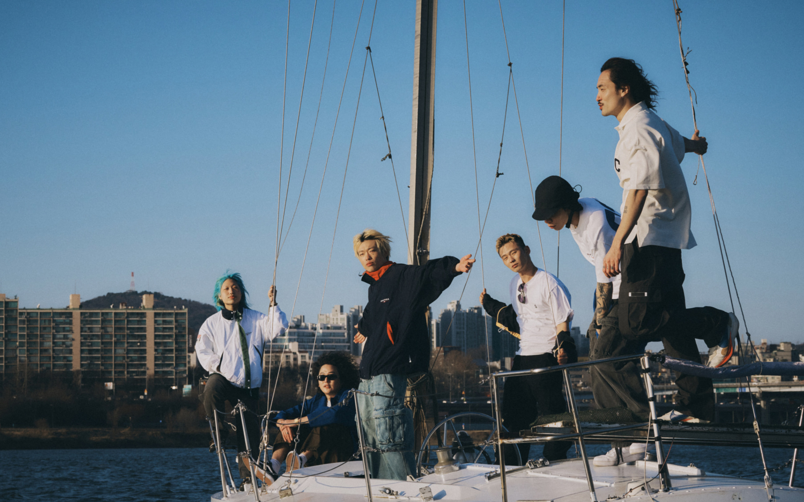
월드와이드월드는 넓은 세상을 여행할 때 필요한 쌩쌩한 것들을 모아서 팝니다.
도심을 여행할 때 가볍게 들고 다닐 가방, 비행기에 싣고 멀리 떠날 트렁크, 산과 바다를 자유롭게 돌아다닐 때 입을 옷과 오래 걸어도 편안한 신발을 소개합니다. 낯선 도시를 걷고, 잠시 멈춰 앉고, 새로운 풍경을 바라보며, 그곳에서 발견한 것들을 담아 돌아오는 모든 순간에 필요한 물건들을 고릅니다.
세상이 넓은 만큼 여행하는 방법도 모두 다르니까요. 월드와이드월드는 저마다의 방식으로 움직이고, 머물고, 다시 떠나는 사람들을 위해 입고, 걷고, 앉고, 가지고 다닐 쓸모 있고 재미있는 물건들을 모아두는 가게입니다.
RAWROW
NAUTICA
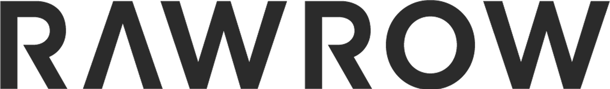
로우로우는 방황하는 이들을 위해 집 떠날 때 필요한 트립웨어를 디자인합니다.
2011년 서울에서 시작된 로우로우는 날것의 본질만 남겨둔 제품에 집중하여 오래 사용할 수 있는 트렁크와 가방 등을 디자인합니다.
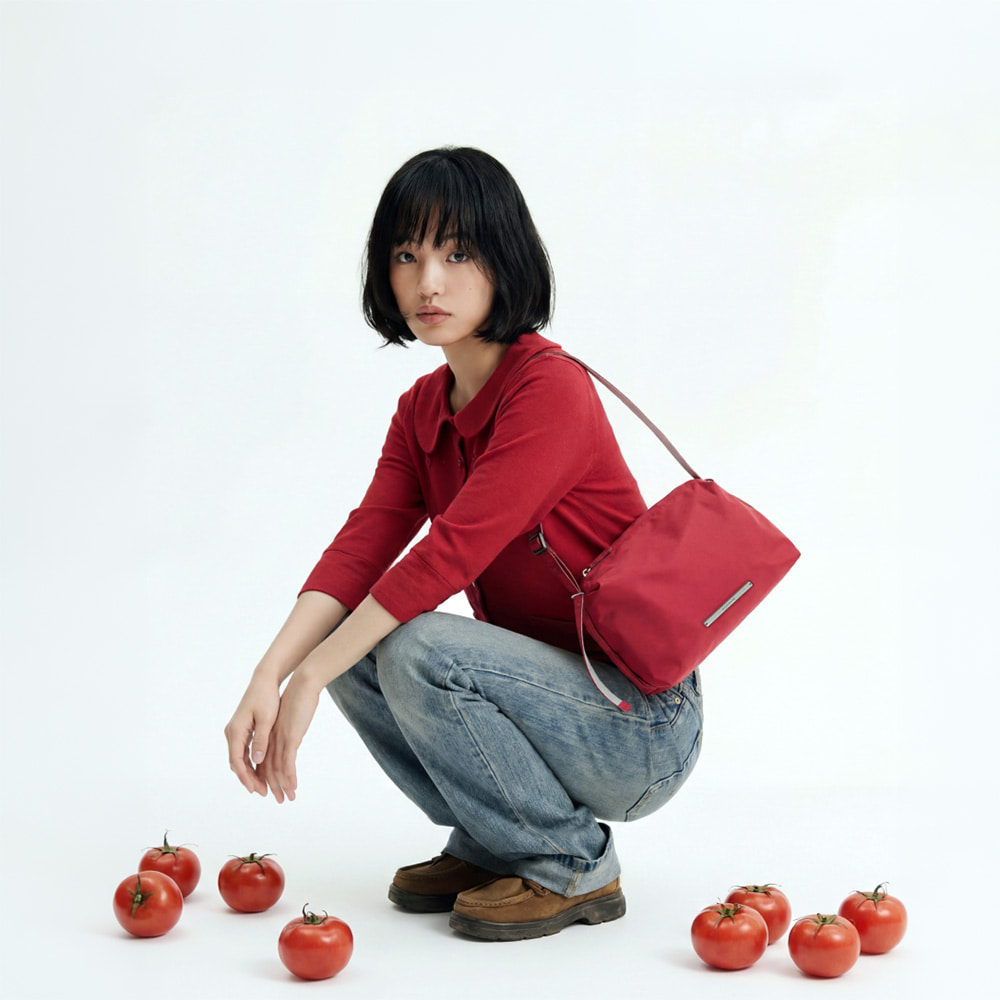
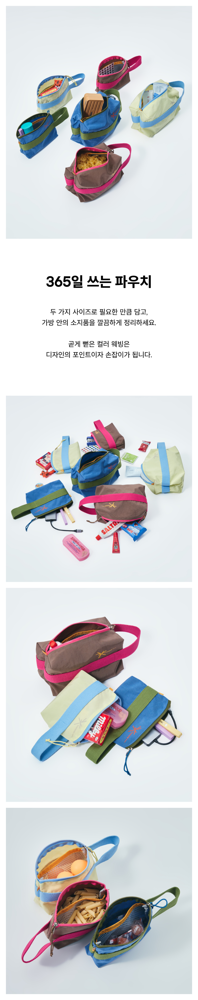
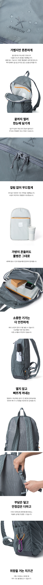
노티카(NAUTICA)는 1983년 바다로부터 영감을 받아 뉴욕에서 탄생했습니다.
안전과 실용성을 강조했던 항해복과 1980년대 미국 팀 스피릿 문화를
바탕으로 항해와 일상을 아우르는 아메리칸 캐주얼 웨어를 제안합니다.
Nautica
SELECTED APPAREL
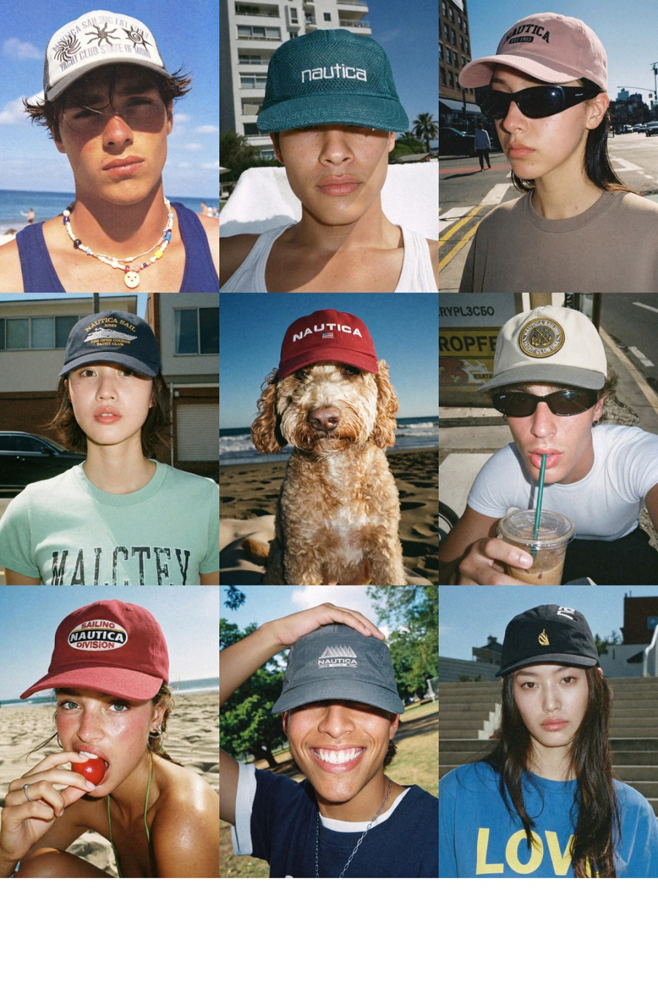
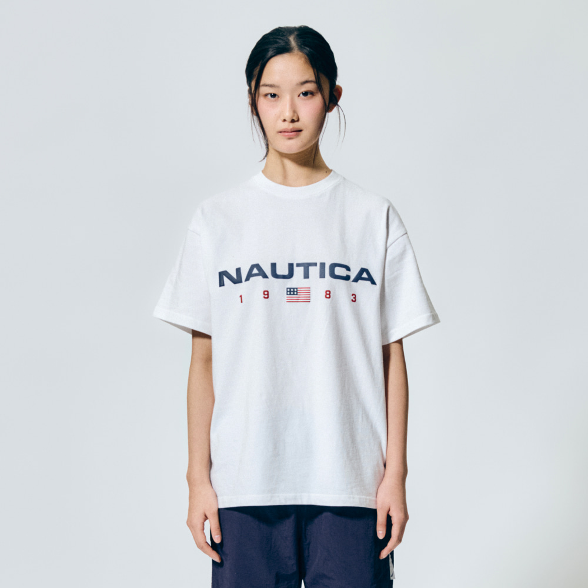
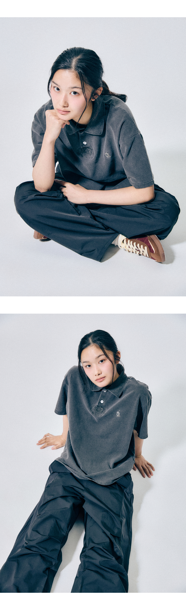
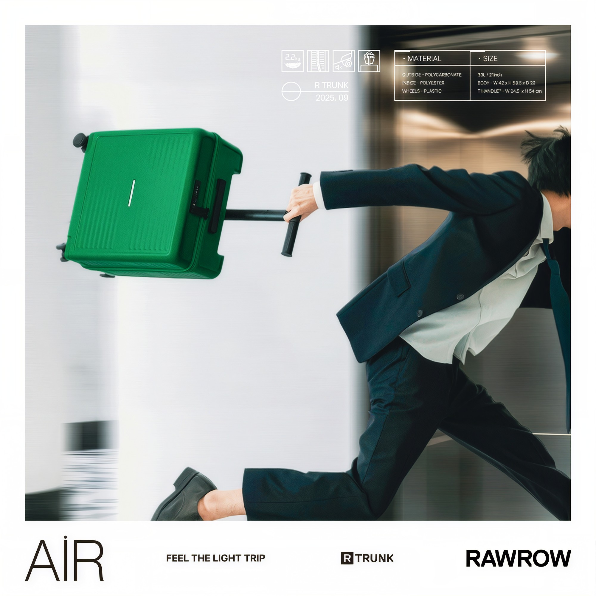
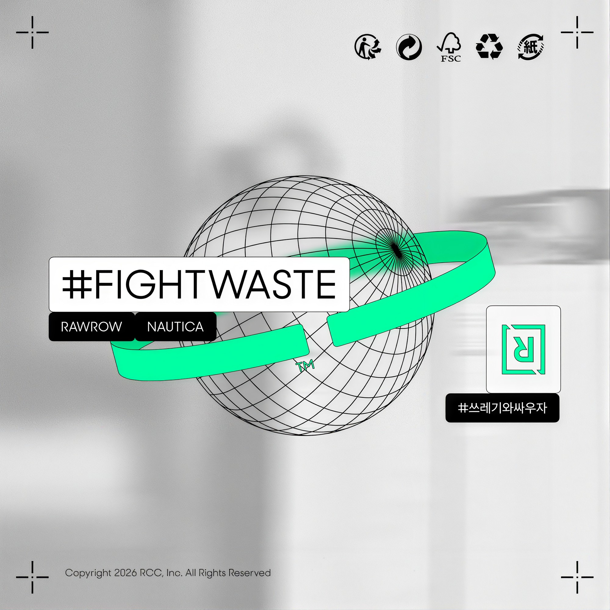
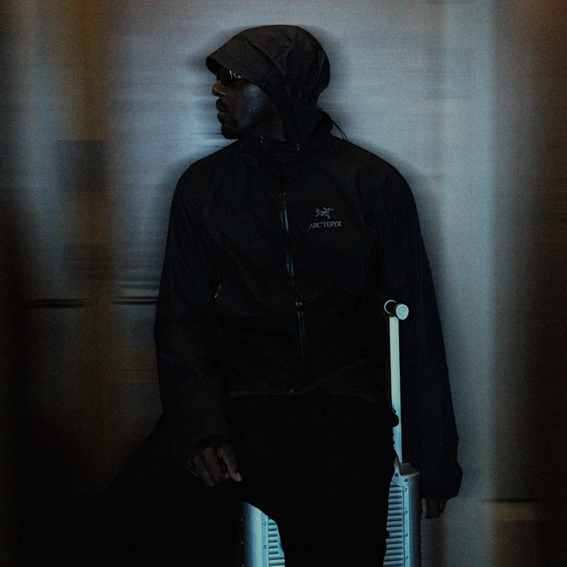
Ye와 다니엘 시저의 앨범 크레딧 이면에서 독보적인 사운드를 깎아낸 캐나다의 인디펜던트 아티스트, 션 레온.
지난 4월 자신의 미공개 앨범 'God's Algorithm’ 청음회를 위해 낯선 서울을 방문하며 음악이라는 매개체로 새로운 도전을 시도하기도 했습니다.
안락함 대신 창의성을 좇아 기꺼이 방황을 자처하는 션 레온에게 스스로의 길을 찾아 떠나는 여정에 대해 물었습니다.
그래픽 디자이너
유현선 (@sun.you.kr)
스튜디오와 브랜드를 오가며 시각적 변수를 통제하는 그래픽 디자이너.
자신만의 뚜렷한 그리드를 그려가는 현선님에게 프로의 일과 도구, 여행에 대해 물었습니다.
성형외과 전문의
이장원 (@pizzafreud)
고유의 인상과 균형을 찾아내는 성형외과 전문의.
일과 삶에서 단단한 밸런스를 맞춰 가는 장원님에게 프로의 일과 도구, 여행에 대해 물었습니다.